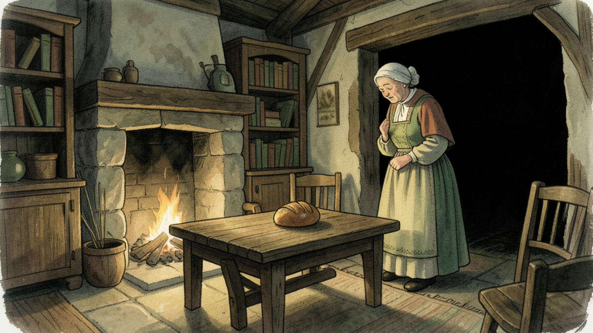
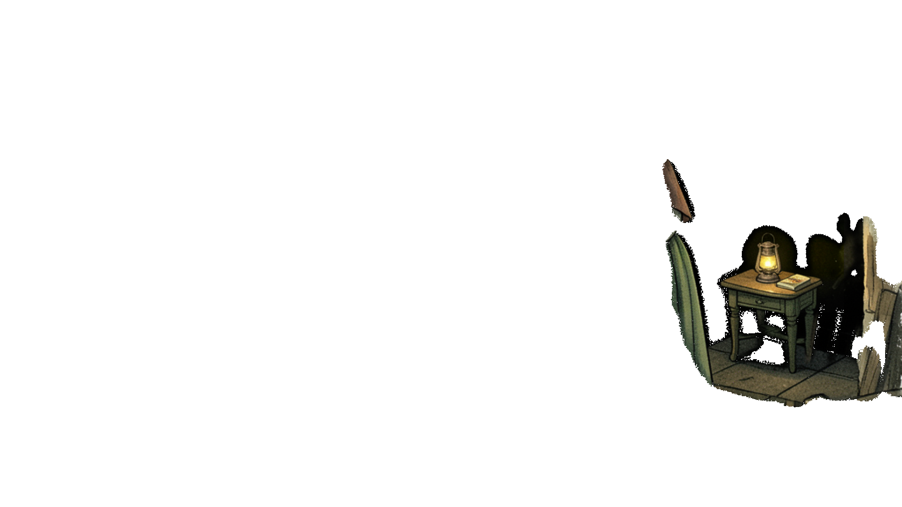

The corner stays exactly as bright and warm as with the lantern on the table, as if Elior is standing just beside it holding the lantern. Only the lantern itself disappears; the journal stays.


A rough sketch made by covering the lantern in today's picture — the team paints the real one. Until it is painted, the game keeps today's picture (the lantern still on the table), so nothing gets worse in the meantime.